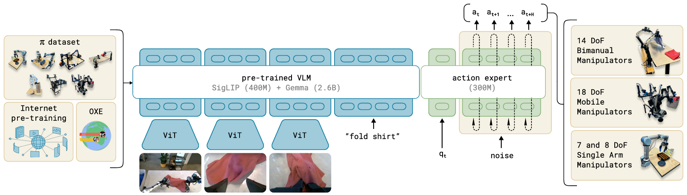
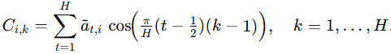
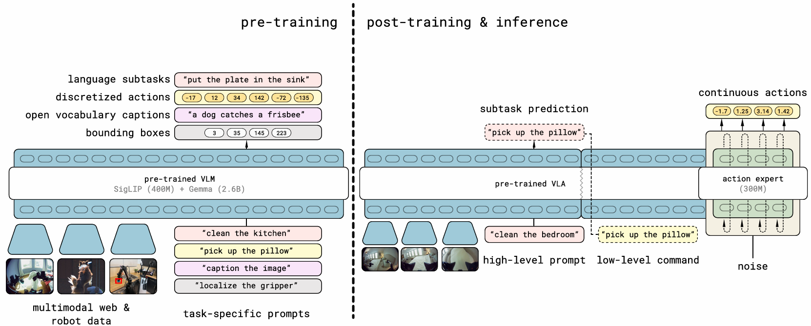

A diary of AI development and learning activities.
VLA Models from Physical Intelligence
Total Views for This Post:
In this blog, I’ll present three Vision-Language-Action
(VLA) models from Physical Intelligence in chronological order:
\(\pi_{0}\),
FAST, and \(\pi_{0.5}\). For \(\pi_{0}\), I’ll describe the full VLA
architecture in detail. For FAST and \(\pi_{0.5}\), I’ll focus on their
key innovations over previous work.
\(\pi_{0}\)
The \(\pi_{0}\)
model takes as input: 1) a sequence of images from a camera, 2) a
language instruction, and 3) the robot’s current state
(e.g., joint angles). It outputs an action command
vector.

image1.PNG
Data Sources:
Internet-scale pretraining: We use a 2 B–parameter
PaliGemma model, which combines a SigLIP image encoder
with a decoder-only Gemma. This model is frozen during
\(\pi_{0}\) training, reducing compute
but capping generalization to PaliGemma’s visual–language
understanding.
Robot-collected data: Includes the Open
X-Embodiment dataset and in-house hardware data to train the
Action Expert.
Action Expert (≈300 M parameters, no
pretraining):
Stage 1 (Deterministic):
Inputs: PaliGemma embeddings + expanded robot state (via MLP).
Process: Multiple self-attention layers.
Output: A combined embedding used in Stage 2.
Stage 2 (Iterative Denoising):
Inputs: Combined embedding + noise sequence representing the
action.
Process: 10 iterations of self-attention to denoise and predict the
final action.
Training:
Optimize the Action Expert with Flow Matching
Loss.
Keep PaliGemma parameters frozen.
FAST
FAST converts continuous actions into
discrete token sequences in the frequency
domain, reframing flow-matching as an autoregressive
classification task:
Normalization:
Clip each joint’s values at the 1st/99th percentiles.
Scale to [–1, 1].
Bold: Ensures outliers don’t distort training.
Fourier Transform:
For an action sequence \(A = \{a₁, …,
a_H\}\), each joint’s time-series is converted to frequency
coefficients \(C_{i,k}\).

image2.png
Quantization:
Scale by γ, then round to integers.
Zeros out small (high-frequency) components, reducing
codebook size.
Tokenization with BPE:
Order tokens from low to high frequency.
Apply Byte-Pair Encoding to merge frequent integer patterns.
Caveats:
False correlations: BPE may bind unrelated joints’
frequencies.
Fixed length: Action sequences need exact
alignment; one token error can misassign high-frequency
motion.
Bold: Explains why FAST is used only for
pretraining in \(\pi_{0.5}\).
Note: \(\pi_{0.5}\) skips FAST decoding during
inference.
\(\pi_{0.5}\)

image3.png
\(\pi_{0.5}\) introduces a
new high-level language decoding stage compared to \(\pi\_{0}\). This stage translates complex
instructions into more intuitive action descriptions, implemented as a
Gemma decoder head. Architecturally, this is the only
difference between \(\pi_{0.5}\) and
\(\pi\_{0}\).
In terms of architecture, the encoder part of PaliGemma is
shared across both vision-language feature extraction and
high-level instruction decomposition. Unlike \(\pi\_{0}\), \(\pi_{0.5}\) does not freeze the VLM
parameters during training, likely due to the increased scale
and diversity of the training data.
Training Strategy
Training is divided into two phases: pretraining and
post-training.
Pretraining: The PaliGemma VLM is pretrained using
various type of data, including discrete action tokens from FAST, object
detection, .... As mentioned by author, where they said "We do not
pretrain an action expert. Instead, we rely on the pretrained VLM and
align it with the action space post-hoc using alignment heads", action
expert is not involved in .
Post-training: Like in \(\pi\_{0}\), the VLM is
frozen, and the action expert is trained using
Flow Matching Loss.
In summary, \(\pi_{0}\) is a system
that assembles prior components from the field---a VLM, a Transformer
decoder, and a flow-matching mechanism. The team later proposed \(\pi_{0.5}\), a pretraining method for the
VLM to address the limitation in \(\pi_{0}\) where the VLM could not be
customized pretrained. If we're being honest, FAST feels more like a
joke than a breakthrough. The method sounds fancy, but its actual
contribution? Questionable at best. Still, we have to give it credit for
one thing: it teaches us a lot about what not to do when
aligning vision and action in multimodal systems.